Ashiyacho
Ashiyacho · Fukuoka
Ashiyacho
Highlighted on the Fukuoka map.
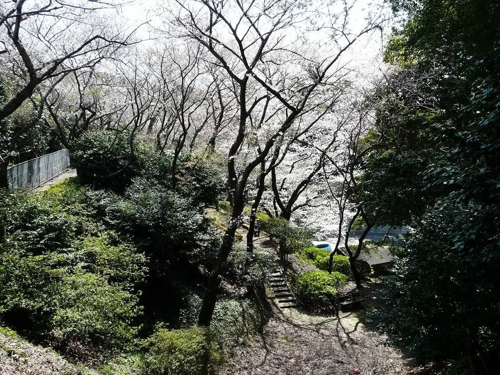
Dining
味処 大丸
Ajidokoro Daimaru
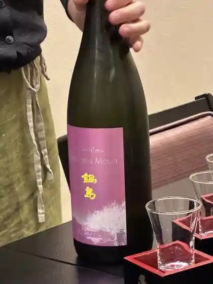
Sunset
Sunset
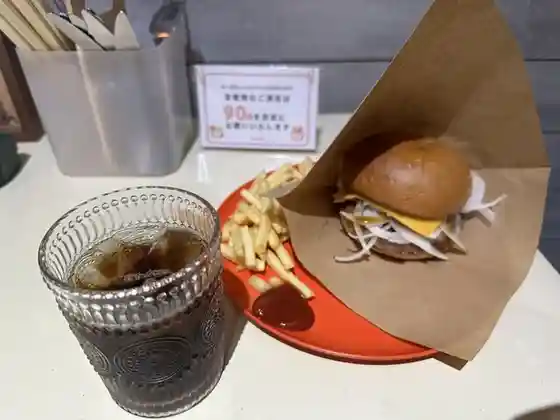
ottimo
ottimo
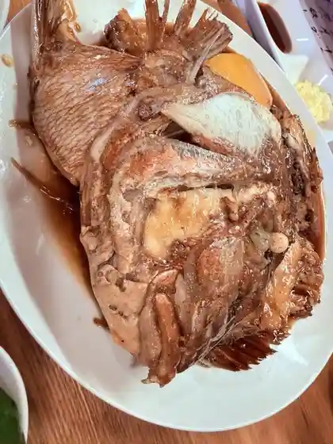
海鮮食堂 味工房
Kaisen Shokudo Aji Koubou
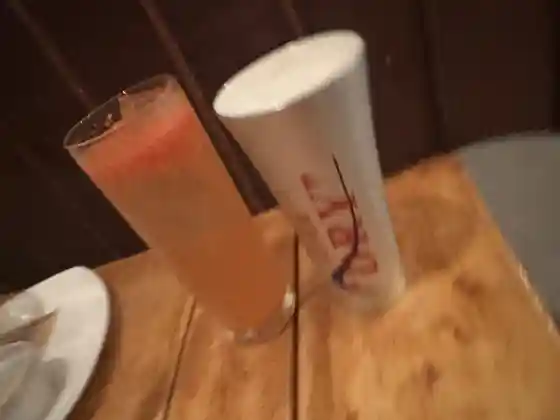
KURA
KURA
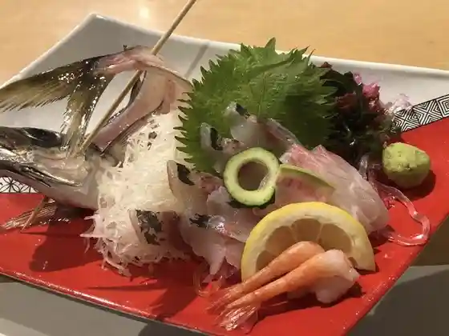
マリンテラスあしや
Marinterasu Ashiya
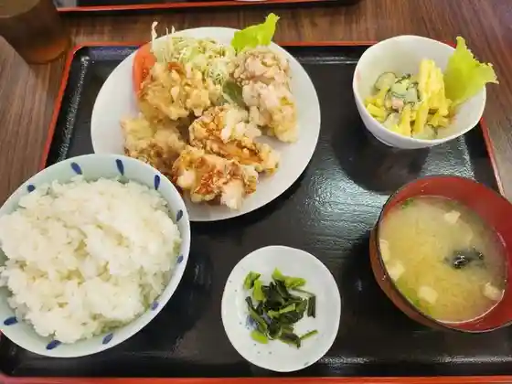
祇園食堂
Gion Shokudo
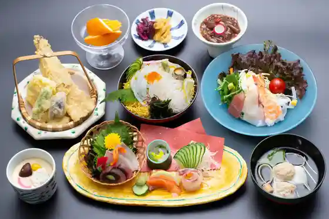
海香亭
Umi Kaori Tei
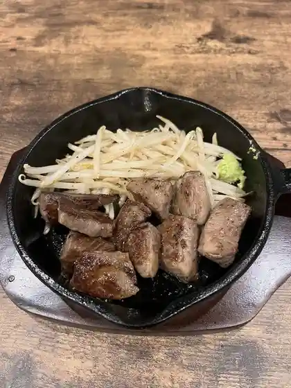
鉄板酒場58
Teppan Sakaba 58
芦屋釜の里
Ashiya Kama No Sato
九州男
Kyuushuu Otoko
パルナチュレ
Parunachure
和楽園
Wagaku Sono
はとやベーカリー
Hatoya Beekarii
串揚げ処 榮壽
Kushi Age Tokoro Eiju
お魚直売所 とと市場
O Uonao Bai Tokoro Toto Shijou
新まんまる
Shin Manmaru
とと市場 海鮮フードコート
Toto Shijou Kaisen Fuudokooto
あしやんぷりん
Ashiyanpurin
じゃむ屋
Jamu Ya
あしや釜本舗
Ashiya Kamamoto Ho
火の茶房 ほうじ屋 遠賀店
Hi No Sabou Houji Ya Onga Mise
ベルパン
Berupan
yamagaya
yamagaya
いそかぜ
Isokaze
TRIAL GO 芦屋山鹿店
TRIAL GO
フードコート ALBA
ALBA
楊楊
You You
ファストフードプラザ
Fasutofuudopuraza
GREEN.JAM.cafe
GREEN.JAM.cafe
夏井ヶ浜kitchen OTO
kitchen OTO
炭火焼肉 ほむら庵
Sumibi Yakiniku Homura Iori
鬼ヶ島
Oni Ke Shima
気まぐれ ごんちゃん
Kimagure Gonchan
&cafe
&cafe
とと市場 バーベキューコーナー
Toto Shijou Baabekyuukoonaa
寿司本家 げんもん
Sushi Honke Genmon
福田豆腐店
Fukuda Toufu Mise
肉の山田屋 とと市場店
Niku No Yamada Ya Toto Shijou Mise
ホルモン豊
Horumon Yutaka
Patisserie PRESENT
Patisserie PRESENT
ARALE
ARALE
桃李
Touri
Cafe & Bar Grace
Cafe & Bar Grace
イキイキイチバ グッドスマイル はまゆう
Ikiikiichiba Guddosumairu Hamayuu
寿し豊
Hisashi Shi Yutaka
アリラン峠 大和屋
Ariran Touge Yamatoya
よっちゃん家
Yotchan Ie
ワンズ クラブ エスケー
Wanzu Kurabu Esukee
季ばら旨
Ki Bara Mune
アプリコットカフェ
Apurikottokafe
タカブーキッチン
Takabuukitchin
芦屋海浜公園レジャープール アクアシアン カフェテリア
Ashiya Kaihin Kouen Rejaapuuru Akuashian Kafeteria
金元精肉店
Kanemoto Seinikuten
永弁
Ei Ben
喫茶･酒場 浪漫
Kissa Kissa Sakaba Rouman
和食処みや川
Washoku Tokoro Miya Kawa
蔵之助
Kuranosuke
焼肉ジュージュー
Yakiniku Juujuu
あるじゃーろ
Arujaaro
goodgoodstore
goodgoodstore
ひき肉研究所
Hiki Niku Kenkyuusho
創作ダイニング Grace
Grace
代志川
Dai Kokorozashi Kawa
ボートレース芦屋外向発売所 アシ夢テラス イートインコーナー
Bootoreesu Ashiya Gaikou Hatsubaijo Ashi Yume Terasu Iitoinkoonaa
韓国酒場 ALLDAY POCHA
ALLDAY POCHA
メンバーズ K
Menbaazu K
居酒屋 夢KANUU
KANUU
野間商店
Noma Shouten
おうちパン Ke-Pi
Ke-Pi
むくの樹
Mukuno Ki
Members 優日
Members
ボンちゃん
Bon Chan
ホルモン焼き つぐちゃん
Horumon Yaki Tsuguchan
重岡商店
Shigeoka Shouten
beach side cafe 502
beach side cafe 502
佐々木商店
Sasaki Shouten
Love
Love
Dining terrace Fujii
Dining terrace Fujii
焚き火ダイニング HOMURA
HOMURA
長崎海産
Nagasaki Kaisan
食処酒処 かわしょう
Shoku Tokoro Sake Tokoro Kawashou
SNACK ANN
SNACK ANN
来れBAR
Kore Bar
ラブグリーン
Rabuguriin
鳥兵衛
Tori Bee
居酒屋 むつ五郎
Izakaya Mutsu Gorou
ホルモンりゅう 芦屋店
Horumon Ryuu Ashiya Mise
夜屋 ゆうとく
Yoru Ya Yuutoku
Bar Woodpecker
Bar Woodpecker
たまりば
Tamariba
アヴェンティーノ
Aventeiino
ブルースカイ
Buruusukai
やさいひろば
Yasaihiroba
Curry LABO
Curry LABO
冗談倶楽部
Joudan Kurabu
祐徳屋旅館
Yuutoku Ya Ryokan
お好み焼き かつ
O Konomi Yaki Katsu
おやじ
Oyaji
ありがた屋 芦屋店
Arigata Ya Ashiya Mise
ほっともっと 芦屋町店
Hottomotto Ashiya Machi Mise
龍
Ryuu
弓音
Yumi Oto
あしやんキッチン
Ashiyan Kitchin
おかん
Okan
トレジャー
Torejaa
木原商店
Kihara Shouten
楓
Momiji
ボートレース芦屋 弁当コーナー
Bootoreesu Ashiya Bentou Koonaa
Bijoux cafe
Bijoux cafe
LAWSON Sミズ芦屋中央病院前店
Lawson S Mizu Ashiya Chuuou Byouin Mae Mise
直美家
Naomi Ie
芦屋青果協業組合
Ashiya Seika Kyougyou Kumiai
ゴリカラ
Gorikara
mer
mer
あんちゃん
Anchan
法楽
Houraku
中嶌家
Nakajima Ie
福耳餃子 芦屋店
Fukumimi Gyouza Ashiya Mise
酔っちゃん
Yotsu Chan
堀江蒲鉾店
Horie Kamaboko Mise
スナックめぞん
Sunakku Mezon
三原惣菜
Mihara Souzai
Snack Niko
Snack Niko
すなっく 異人館
Sunakku Ijinkan
スナック マブハイ
Sunakku Mabuhai
NAPOLI
NAPOLI
よってけばぁ
Yottekebaa
スナック 亜梨子
Sunakku A Nashi
藤江商店
Fujie Shouten
ファミリーマート 芦屋浜口町店
Famiriimaato Ashiya Hamaguchi Machi Mise
you 祐 倶楽部
you
かどや製菓店
Kadoya Seika Mise
アウラニ
Aurani
てのや商店
Tenoya Shouten
艶
Tsuya
スナック ドリーム
Sunakku Doriimu
芦屋海産
Ashiya Kaisan
韓国風居酒屋 辛味
Kankoku Kaze Izakaya Karami
スナックM
Sunakku M
セブンイレブン 芦屋山鹿店
Sebun'irebun Ashiya Yamaga Mise
ニューホワイト
Nyuuhowaito
LAWSON 遠賀芦屋町店
LAWSON
セブンイレブン 芦屋浜口店
Sebun'irebun Ashiya Hamaguchi Mise
ディスカウントドラッグ コスモス 福岡芦屋店
Disukauntodoraggu Kosumosu Fukuoka Ashiya Mise
福岡・芦屋 縄文の丘 グランピングリゾート
福岡・芦屋 縄文の丘 グランピングリゾート
And-Days
And-Days
LAWSON 芦屋高浜町店
LAWSON
L'OASI
L&39OASI
きみしゃん本舗
Kimishan Honpo
YuMii
YuMii
肉と肴料理 かわかみ
Niku To Sakana Ryouri Kawakami
武将茶屋
Bushou Chaya
オールデイキンパ
Oorudeikinpa
OWL
OWL
ファミリーマート 芦屋基地店
Famiriimaato Ashiya Kichi Mise
Kaneyasu Ashiya
Kaneyasu Ashiya
Toto Ichiba
Toto Ichiba
Restaurant Mrine Katei
Restaurant Mrine Katei
Honda
Honda
Gion Canteen
Gion Canteen
Sushitoyo
Sushitoyo
Kusuo Ashiya Honten
Kusuo Ashiya Honten
Kure Bar
Kure Bar
Tsuritomo Sankichi
Tsuritomo Sankichi
Yanyan
Yanyan
Waraku En
Waraku En
Satsuma Shokudo
Satsuma Shokudo
Okonomiyaki Tsuruchan
Okonomiyaki Tsuruchan
Taisho
Taisho
Momotaro Ashiya
Momotaro Ashiya
Daikichi
Daikichi
Baisenya Totoichiba
Baisenya Totoichiba
Japanese Restaurant Miyagawa
Japanese Restaurant Miyagawa
Kuimonya
Kuimonya
Kaku Sushi
Kaku Sushi
Karaoke Hatsu
Karaoke Hatsu
Hana Sanuki
Hana Sanuki
Sakura
Sakura
Yonchamu Bachanchi
Yonchamu Bachanchi
Shikisai Rin
Shikisai Rin
Chiyobee
Chiyobee
Ramen Katsuryuken Ashiya
Ramen Katsuryuken Ashiya
Horaku
Horaku
Total Service Group
Total Service Group
Aulani
Aulani
White
White
Zekkocho
Zekkocho
Yuki
Yuki
Yuri
Yuri
Stay
国民宿舎 マリンテラスあしや
Kokuminshukusha Marinterasu Ashiya
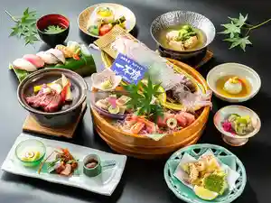
Sights
Dozan
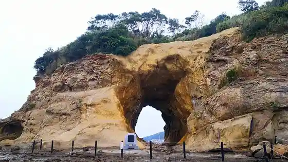
Ashiyacho Beach Rejapuruakuashian
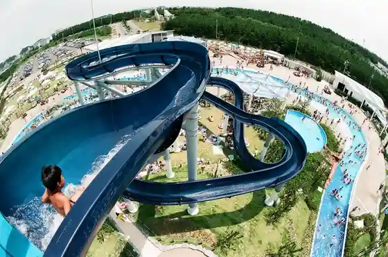
Ashiyacho Kama Village
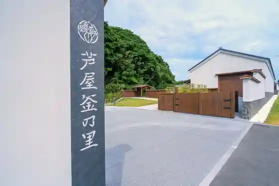
O Uonao Bai Tokoro Toto Market
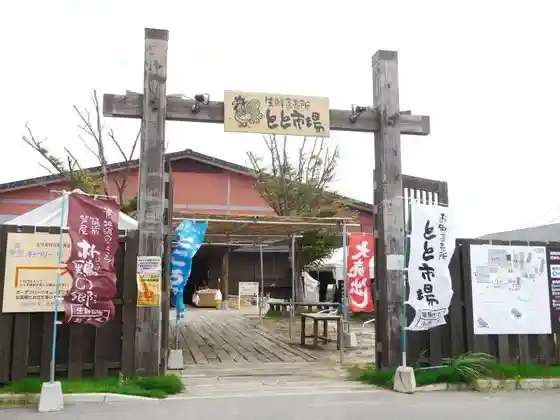
Botokizzu Park Movi Ashiyacho
Natsuigahama Hamayu Park
Ashiyacho Rekishi Village
Ashiyacho Seaside Park
Oka Minato Shrine
Uomi Park
Chikuzen Ashiyacho Dagobiinatowara Uma no Kaijimukyoku (Ashiyacho Tourism Association Nai)
Ashiyan'ika
Yamaga Kaizuka
Togano Misaki
Maboroshi no Meiki Ashiyacho Kama
Ashiyacho Tourism Association
Hassaku no Uma
Shiroyama Park